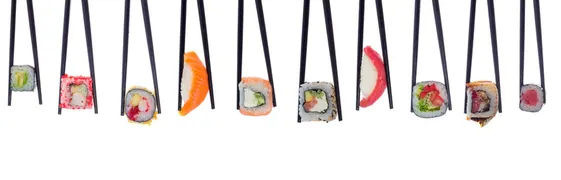

My favorite movies
- Jujutsu Kaisen: Execution
- Grown Ups
- Step Brothers
I am a 17-year-old high school student taking a vocational school class because I want to work with computers in the future.
I like anime and comedies because I enjoy interesting stories, good plots, and movies that make me laugh.
Music is something I listen to when I am relaxing, working, or just hanging out.
I enjoy games where I can explore, collect things, build, or compete with other players.
I like trying different foods, especially foods with interesting flavors and textures.

Here are five favorites from all of my categories.